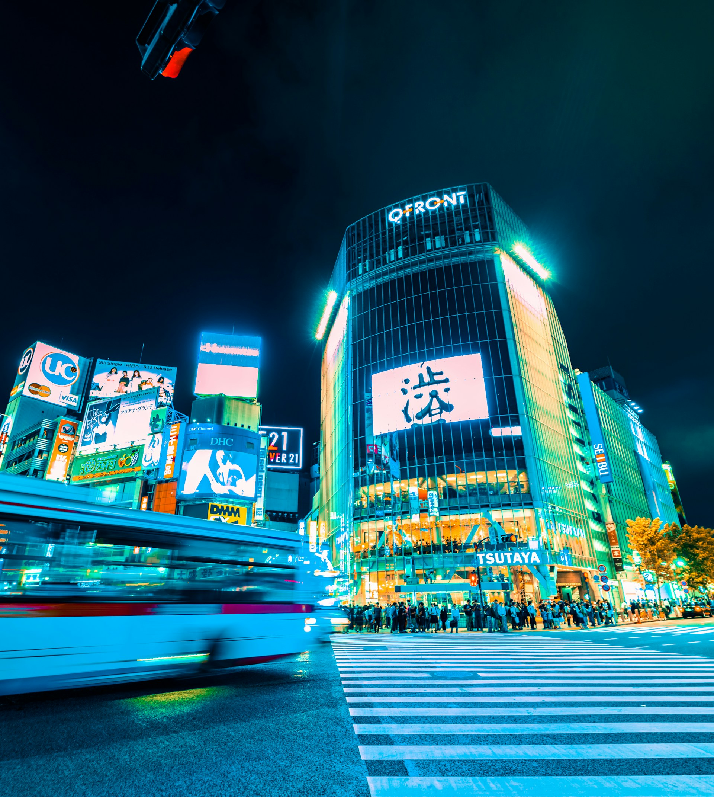

Portfolio
I be driven by a desire to capture the beauty, emotion, and essence of life, and to tell stories that resonate with his audience.
{kind=link}
{kind=link}
{kind=link}
{kind=link}
{kind=link}
{kind=link}
{kind=link}
{kind=link}


{kind=link}

I'm passionate about capturing the raw beauty and energy of city life. I would be drawn to the interplay of light and shadow, the architectural marvels of urban landscapes, the fleeting moments of human interaction, and the gritty realities of everyday life in the city.
Capturing life's beauty and essence through photography. I has a deep appreciation for nature, about telling stories and evoking emotions through my images, which is evident in my portraits, landscapes, and experimental shots.
Many of my photographs have a moody, atmospheric quality, often with a focus on dramatic lighting and shadows. Urban photography often requires waiting for the right moment and being willing to revisit locations repeatedly to get the shot
I have a deep appreciation for nature, landscape and outdoor photographs. Being able to adjust to different lighting conditions, weather, and unforeseen situations.

I doesn't shy away from experimenting with different techniques, such as multiple exposures, unusual angles, and creative editing. Ability to navigate crowded streets, anticipate fleeting moments, and interact with people in a respectful and unobtrusive way.
My portraits and close-up shots convey a sense of intimacy and emotion, capturing the essence of my subjects and tell their stories.
Oct
October 2013 – November 2013 (2 months) Madrid, España. I has used the vibrant colors of the billboards and the surrounding lights to create a visually stunning image.
Read MoreAug
October 2013 – November 2013 (2 months) London, England. The photo is well-balanced, with the converging lines of the buildings and the central focus on the crosswalk leading the eye to the heart of the scene.
Read MoreAug
October 2013 – November 2013 (2 months) Menlo Park, CA, United States of America. The photo effectively uses the contrasting light from the billboards and the streetlights to create a vibrant atmosphere.
Read MoreJan
October 2013 – November 2013 (2 months) Rio de Janeiro, Brasil. The photo effectively conveys the sense of activity and excitement that is synonymous with Times Square.
Read More{kind=link}
{kind=link}